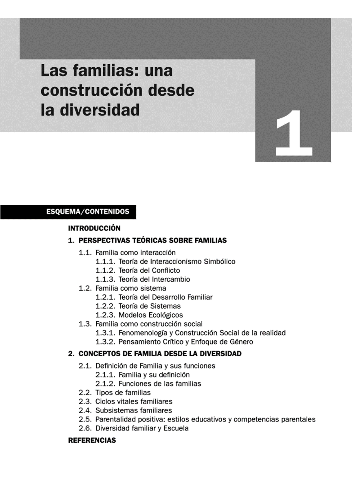
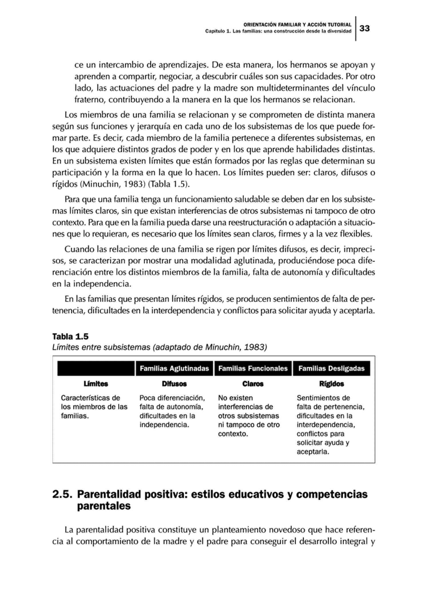

OFAT U01.1 Las familias: una construcción desde la diversidad
1.1. Las familias: una construcción desde la diversidad¶
Esta unidad aborda la familia como una realidad plural, dinámica y en transformación, y ofrece un marco teórico para intervenir en contextos familiares diversos desde la orientación familiar y la acción tutorial.

Imagen extraída del material base del Tema 1.Objetivos de aprendizaje¶
- Reconocer las principales perspectivas teóricas para el estudio de las familias.
- Comprender la diversidad familiar y su impacto en la escuela.
- Analizar los ciclos vitales y los subsistemas familiares.
- Identificar los principios de la parentalidad positiva.
- Relacionar orientación familiar y acción tutorial con situaciones de riesgo y vulnerabilidad.
Vocabulario clave¶
| Término | Definición didáctica |
|---|---|
| Diversidad familiar | Existencia de múltiples estructuras y dinámicas familiares, sin un único modelo válido. |
| Perspectiva sistémica | Enfoque que entiende la familia como un sistema de relaciones interdependientes. |
| Ciclo vital familiar | Secuencia de etapas por las que transita una familia a lo largo del tiempo. |
| Subsistemas familiares | Relaciones diferenciadas dentro de la familia (conyugal, parental y fraternal). |
| Parentalidad positiva | Ejercicio de la responsabilidad parental orientado al bienestar y desarrollo integral del menor. |
| Competencias parentales | Capacidades de madres y padres para cuidar, educar, proteger y orientar de forma ajustada. |
1. Perspectivas teóricas sobre familias¶
El estudio de las familias en Ciencias Sociales se ha enriquecido con marcos diversos. Esta pluralidad permite comprender mejor la complejidad de las relaciones familiares y diseñar intervenciones más ajustadas a cada contexto.
1.1. Familia como interacción¶
Este enfoque analiza la familia desde las interacciones cotidianas entre sus miembros, los significados compartidos y los roles que se negocian en la vida diaria.
1.1.1. Interaccionismo simbólico¶
- Se centra en símbolos, identidad y construcción de roles.
- Explica que el comportamiento familiar se interpreta según significados compartidos.
- Permite analizar expectativas familiares y conflictos de rol.
1.1.2. Teoría del conflicto¶
- Considera el conflicto como un elemento normal e inevitable en la interacción social.
- Distingue factores macrosociales (clase social, género, pobreza) y microsociales (dinámica cotidiana).
- Aporta herramientas para comprender tensiones familiares y su gestión educativa.
1.1.3. Teoría del intercambio¶
- Interpreta las relaciones familiares en términos de costes, beneficios y reciprocidad.
- Ayuda a comprender por qué algunas relaciones se mantienen o se debilitan.
- Introduce nociones útiles en intervención: justicia distributiva, asimetría y endeudamiento relacional.
1.2. Familia como sistema¶
Desde esta perspectiva, la familia funciona como un sistema abierto en relación constante con su entorno, con capacidad de adaptación y reorganización.
1.2.1. Teoría del desarrollo familiar¶
- Señala que la familia evoluciona por etapas y tareas evolutivas.
- Destaca la influencia de la historia familiar y las expectativas de futuro.
- Subraya la importancia de acompañar transiciones con apoyo educativo y orientación.
1.2.2. Teoría de sistemas¶
- Analiza normas, límites, roles y patrones de comunicación.
- Entiende que un cambio en un miembro afecta al conjunto familiar.
- Es clave para diseñar intervenciones centradas en relaciones y no solo en individuos.
1.2.3. Modelos ecológicos¶
- Sitúan a la familia dentro de redes y contextos (escuela, comunidad, políticas públicas).
- Explican que el bienestar infantil depende de factores interconectados.
- Refuerzan la necesidad de coordinación entre familia, escuela y servicios socioeducativos.
1.3. Familia como construcción social¶
Esta mirada interpreta la familia como una realidad social e histórica, configurada por valores culturales, cambios sociales y relaciones de poder.
1.3.1. Fenomenología y construcción social de la realidad¶
- Propone comprender cómo las familias construyen sentido en su día a día.
- Pone el foco en la experiencia subjetiva y en la interpretación de cada situación.
- Resulta útil para una orientación basada en escucha, diálogo y acompañamiento.
1.3.2. Pensamiento crítico y enfoque de género¶
- Analiza desigualdades, estereotipos y distribución de responsabilidades de cuidado.
- Ayuda a revisar prácticas educativas que pueden reproducir inequidades.
- Favorece intervenciones más inclusivas y equitativas en escuela y familia.
2. Conceptos de familia desde la diversidad¶
La familia no es una estructura fija. Cambia en su composición, en sus funciones y en sus relaciones internas según el momento vital y el contexto social.
2.1. Definición de familia y funciones¶
La familia puede definirse como un sistema de vínculos afectivos, de cuidado y de responsabilidad compartida. Entre sus funciones principales destacan:
- Protección y cuidado.
- Socialización y transmisión de valores.
- Apoyo emocional y construcción de identidad.
- Acompañamiento educativo.
2.2. Tipos de familias¶
En la realidad educativa encontramos diferentes configuraciones: nuclear, extensa, monoparental, reconstituida, homoparental, adoptiva, acogedora, entre otras. El criterio pedagógico no debe ser la forma familiar, sino su capacidad de cuidado, protección y vínculo.
2.3. Ciclos vitales familiares¶
Las familias atraviesan etapas y transiciones que generan cambios y ajustes. En estos procesos pueden aparecer crisis:
- Accidentales (imprevistas).
- Vitales (ligadas al desarrollo evolutivo).
- Estructurales (dificultades persistentes en la organización familiar).
- De cuidado (asociadas a dependencia, enfermedad o sobrecarga).
Comprender estas crisis permite intervenir de forma preventiva y educativa.
2.4. Subsistemas familiares¶
Los subsistemas principales son:
- Conyugal: vínculo entre adultos de la pareja.
- Parental: relación educativa y de cuidado con hijos e hijas.
- Fraternal: relación entre hermanos.
La calidad del funcionamiento familiar depende, en gran medida, de la existencia de límites claros y flexibles, que permitan autonomía, pertenencia y cooperación.

Tabla extraída del material base sobre límites en subsistemas familiares.2.5. Parentalidad positiva: estilos educativos y competencias parentales¶
La parentalidad positiva se orienta al interés superior del menor y combina afecto, guía, reconocimiento y límites adecuados. No equivale a permisividad.
Principios básicos:
- Afecto y vínculo seguro.
- Entorno estructurado con normas claras.
- Estimulación y apoyo al aprendizaje.
- Reconocimiento de necesidades y derechos.
- Capacitación progresiva para la autonomía.
- Educación sin violencia.
Las competencias parentales incluyen flexibilidad, comunicación, resolución de problemas y uso de redes de apoyo.
2.6. Diversidad familiar y escuela¶
La escuela debe asumir la diversidad familiar como una condición estructural de la comunidad educativa, no como excepción.
Claves para la acción tutorial:
- Evitar juicios y estereotipos sobre modelos familiares.
- Establecer comunicación respetuosa y bidireccional con todas las familias.
- Detectar situaciones de riesgo o vulnerabilidad de forma temprana.
- Coordinar respuestas con orientación y recursos comunitarios.
- Promover una cultura escolar inclusiva y corresponsable.
3. Síntesis final¶
- Las familias son realidades diversas y cambiantes.
- Ninguna teoría por sí sola explica toda la complejidad familiar.
- La parentalidad positiva mejora bienestar y desarrollo infantil cuando combina afecto y límites.
- Los subsistemas y sus límites son clave para comprender la dinámica familiar.
- La acción tutorial requiere enfoque inclusivo, preventivo y coordinado con la orientación familiar.
Referencias orientativas del tema¶
- Barudy, J., y Dantagnan, M. (2009). Parentalidad y resiliencia.
- Gracia, E., y Musitu, G. (2000). Intervención familiar y modelos teóricos.
- Minuchin, S. (1983). Teoría estructural de la familia.
- Rodrigo, M. J., et al. (2010; 2015). Parentalidad positiva y competencias parentales.
- Watzlawick, P., et al. (2002). Comunicación y sistemas familiares.
Fecha de actualización: 23/02/2026